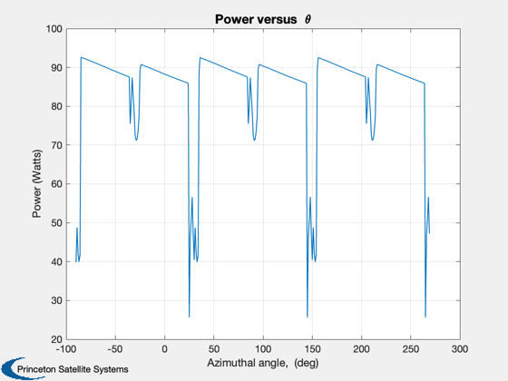
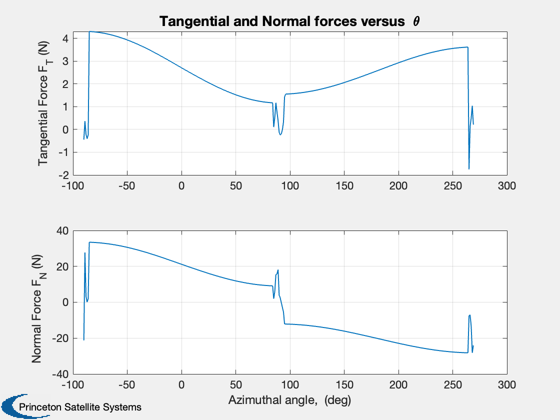
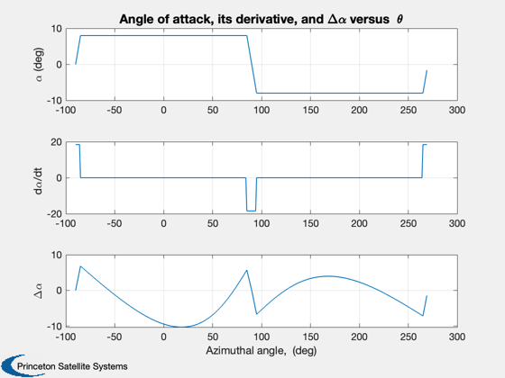
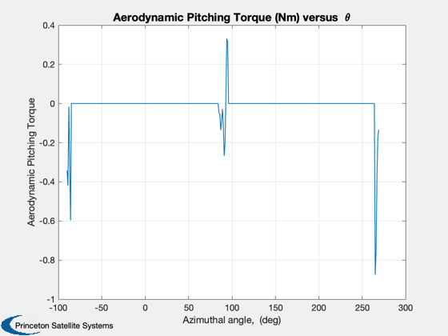

Double Multiple Streamtube with straight 3-bladed VAWT
This is demonstration of the Double Multiple Streamtube model applied to straight-bladed vertical axis wind turbine (VAWT). The VAWT in this demo has three blades.
------------------------------------------------------------------------ See also Plot2D, LoadAirfoilFile, BldComps ------------------------------------------------------------------------
Contents
%-------------------------------------------------------------------------- % Copyright (c) 2010 Princeton Satellite Systems, Inc. % All Rights Reserved. %--------------------------------------------------------------------------
Blade Characteristics
%---------------------- BldPrfFl = 'NACA0012.af'; % A NACA0012 Blade Profile is assumed af = LoadAirfoilFile(BldPrfFl); bld = struct; bld.c = 0.0254*8; % Blade chord (m) bld.H = (0.3048/2)*5; % Blade half-length (m) Span = 2*bld.H; bld.thknss = 0.12*bld.c; % Blade thickness (m) zR = 3; % Blade clearance (m) R = 1.2776*bld.H; % Rotor radius (m) N = 3; % Number of blades
Wind Characteristics
%--------------------- alphaw = 0; % wind shear component rho = 1.21; % air density (kg/m^3) nu = 1.48e-5; % kinematic viscosity (m^2/2) VInfty = 4; %13.6; % free stream wind speed (m/s) omega = 110*pi/30; TSR = omega*R/VInfty;
Turbine Characteristics
%------------------------ Ret = R*omega*bld.c/nu; % turbine Reynolds number
Model Options
%-------------- DynStlModel = 'IGormont'; %('StaticStall' or 'IGormont') af.alpha0 = 0; % airfoil angle of atack for zero lift
Control settings
%----------------- ControlAlgo = 'CustomPC2';%'SinePC' or 'OffsetPC' or 'CustomPC2') alphap = 0;
Demo Parameters
%---------------- nItLim = 100; % Limit on number of iterations nAngInc1 = 100; % Number of angle increments dTa = pi/nAngInc1; % Angle increment dT = dTa/omega;
Compute upwind interference factor
%----------------------------------- u = 0.7; % Initial guess for u taUp = -pi/2:dTa:pi/2; flag = 0; ntaUp = length(taUp); for i = 1:nItLim if flag < 1 V = u*VInfty; % upwind induced velocity X = R*omega/V; % upwind tip-speed ratio f = 0; for j = 1:ntaUp-1 W = V*sqrt((X-sin(taUp(j)))^2 + (cos(taUp(j)))^2); Reb = (Ret/X)*(W/V); alpha1 = asin(V*cos(taUp(j))/W); alpha2 = feval(ControlAlgo,taUp(j),alpha1); alpha = alpha1+alpha2; WTemp = V*sqrt((X-sin(taUp(j+1)))^2 + (cos(taUp(j+1)))^2); alphaTemp1 = asin(V*cos(taUp(j+1))/WTemp); alphaTemp2 = feval(ControlAlgo,taUp(j+1),alphaTemp1); alphaTemp = alphaTemp1 + alphaTemp2; alphadot = (alphaTemp-alpha)/dT; alpha = mod(alpha,2*pi); [CL,CD,CM] = feval(DynStlModel,af,bld,Reb,alpha,alphadot,W); CN = (CL*cos(alpha) + CD*sin(alpha)); CT = CL*sin(alpha) - CD*cos(alpha); f = f + dTa*(N*bld.c/(8*pi*R))*(CN*cos(taUp(j))... + CT*sin(taUp(j)))*(W/V)^2; end unew = pi/(f+pi); if abs(u-unew) < 1e-4 flag = 1; % Convergence achieved nIu = i; elseif i==nItLim disp('Warning: upwind interference iteration limit reached') end u = unew; end end V = u*VInfty; Ve = (2*u-1)*VInfty;
Compute downwind interference factor
%------------------------------------- upm = 0.7; taDn = pi/2:dTa:3*pi/2; flag = 0; ntaDn = length(taDn); for i = 1:nItLim if flag < 1 Vpm = upm*Ve; % downwind induced velocity X = R*omega/Vpm; % downwind tip-speed ratio f = 0; for j = 1:ntaDn-1 W = Vpm*sqrt((X-sin(taDn(j)))^2 + (cos(taDn(j)))^2); Reb = (Ret/X)*(W/Vpm); alpha1 = asin(Vpm*cos(taDn(j))/W); alpha2 = feval(ControlAlgo,taDn(j),alpha1); alpha = alpha1+alpha2; WTemp = Vpm*sqrt((X-sin(taDn(j+1)))^2 + (cos(taDn(j+1)))^2); alphaTemp1 = asin(Vpm*cos(taDn(j+1))/WTemp); alphaTemp2 = feval(ControlAlgo,taDn(j+1),alphaTemp1); alphaTemp = alphaTemp1 + alphaTemp2; alphadot = (alphaTemp-alpha)/dT; alpha = mod(alpha,2*pi); [CL,CD,CM] = feval(DynStlModel,af,bld,Reb,alpha,alphadot,W); CN = (CL*cos(alpha) + CD*sin(alpha)); CT = CL*sin(alpha) - CD*cos(alpha); f = f + dTa*(N*bld.c/(8*pi*R))*(CN*cos(taDn(j))... + CT*sin(taDn(j)))*(W/Vpm)^2; end upmnew = pi/(f+pi); if abs(upm-upmnew) < 1e-4 flag = 1; % Convergence achieved nId = i; elseif i==nItLim disp('Warning: downwind interference iteration limit reached') end upm = upmnew; end end Vpm = upm*Ve; Vdpm = (2*u-1)*(2*upm-1)*VInfty; if u < 0.5|| upm < 0.5 disp('INTERFERENCE FACTOR < 0.5: Double Multiple Streamtube Model may be inaccurate') end
Plot the results
%------------------ nAngInc2 = 360; dTa = 2*pi/nAngInc2; % Angle increment dT = dTa/omega; Xu = R*omega/V; % upwind tip-speed ratio Xd = R*omega/Vpm; % downwind tip-speed ratio PwPrfP = zeros(nAngInc2,1); % Power as a fn of theta taP = zeros(nAngInc2,1); % theta FTP = zeros(nAngInc2,1); % Tangential force as a fn of theta alphaP = zeros(nAngInc2,1); % angle of attack as a fn of theta alphadotP = zeros(nAngInc2,1); DAlpP = zeros(nAngInc2,1); % amount of pitch control CQP = zeros(nAngInc2,1); % Torque coefficient as a fn of theta FNP = zeros(nAngInc2,1); % Normal force as a fn of theta NRF = zeros(nAngInc2,1); PTq = zeros(nAngInc2,1); WVec = zeros(N,1); RebVec = zeros(N,1); alpha1Vec = zeros(N,1); alpha2Vec = zeros(N,1); alphaVec = zeros(N,1); alphadotVec = zeros(N,1); CLVec = zeros(N,1); CDVec = zeros(N,1); CMVec = zeros(N,1); CNVec = zeros(N,1); CTVec = zeros(N,1); FTPVec = zeros(N,1); CQPVec = zeros(N,1); FNPVec = zeros(N,1); PTqVec = zeros(N,1); PwPrfVec = zeros(N,1); for j = 1:nAngInc2 theta = (j-1)*dTa - pi/2; thetaVec = theta; for k = 2:N thetaVec = [thetaVec;theta+2*(k-1)*pi/N]; end for k = 1:N [WVec(k),RebVec(k),alpha1Vec(k)] = BldComps(thetaVec(k),Xu,Xd,V,Vpm,Ret); alpha2Vec(k) = feval(ControlAlgo,thetaVec(k),alpha1Vec(k)); alphaVec(k) = alpha1Vec(k)+alpha2Vec(k); [WT,RebT,alpha1T] = BldComps(thetaVec(k)+dTa,Xu,Xd,V,Vpm,Ret); alpha2T = feval(ControlAlgo,thetaVec(k)+dTa,alpha1T); alphaT = alpha1T+alpha2T; alphadotVec(k) = (alphaT-alphaVec(k))/dT; alphaVec(k) = mod(alphaVec(k),2*pi); [CL,CD,CM] = feval(DynStlModel,af,bld,RebVec(k),alphaVec(k),alphadotVec(k),WVec(k)); qF = bld.c*(1/2)*rho*WVec(k)^2*Span; CLVec(k) = CL*qF; CDVec(k) = CD*qF; CMVec(k) = CM*qF; CNVec(k) = CLVec(k)*cos(alphaVec(k)) + CDVec(k)*sin(alphaVec(k)); CTVec(k) = CLVec(k)*sin(alphaVec(k)) - CDVec(k)*cos(alphaVec(k)); PTqVec(k) = CMVec(k); end FTP(j) = CTVec(1); FNP(j) = CNVec(1); PwPrfP(j) = omega*R*sum(CTVec); CQP(j) = sum(CTVec)*R/(2*rho*VInfty^2*R*Span*2*R); alphaP(j) = atan2(sin(alphaVec(1)),cos(alphaVec(1))); alphadotP(j) = alphadotVec(1); DAlpP(j) = alpha2Vec(1); taP(j) = theta; PTq(j) = CMVec(1); end fprintf(1,'\n') fprintf(1,'Number of blades: %2.0f\n', N) fprintf(1,'Dynamic Stall Model Used: %s\n', DynStlModel) fprintf(1,'Pitch Control Algo Used: %s\n', ControlAlgo) fprintf(1,'Tangential Force Range [%5.2f %5.2f] N\n', min(FTP), max(FTP)) fprintf(1,'Normal Force Range [%5.2f %5.2f] N\n', min(FNP), max(FNP)) fprintf(1,'Torque Range [%5.2f %5.2f] Nm\n', (1/(omega*R))*min(PwPrfP), (1/(omega*R))*max(PwPrfP)) fprintf(1,'Rotor speed = %5.1f rpm\n', omega*30/pi) fprintf(1,'Rotor height = %3.2f ft, Rotor diameter = %3.2f ft, Chord = %3.2f in\n', Span/(0.0254*12), 2*R/(0.0254*12), bld.c/0.0254) fprintf(1,'Tip Speed Ratio = %5.2f\n', TSR) fprintf(1,'Wind speed = %5.1f m/s\n', VInfty) fprintf(1,'Rotor speed = %5.1f rpm\n', omega*30/pi) fprintf(1,'Average Power = %5.3f kW\n', mean(PwPrfP)/1000) fprintf(1,'\n') xL = 'Azimuthal angle, (deg)'; yL = 'Power (Watts)'; Plot2D(taP'*180/pi,PwPrfP',xL,yL,'Power versus { }\theta') grid on yL = {'Tangential Force F_T (N)', 'Normal Force F_N (N)'}; Title = 'Tangential and Normal forces versus { }\theta'; Plot2D(taP'*180/pi,[FTP';FNP'],xL,yL, Title) grid on yL = {'\alpha (deg)', 'd\alpha/dt', '\Delta\alpha'}; Title = 'Angle of attack, its derivative, and \Delta\alpha versus { }\theta'; Plot2D(taP'*180/pi,[alphaP'*180/pi;alphadotP';DAlpP'*180/pi],xL,yL, Title) grid on yL = 'Aerodynamic Pitching Torque'; Title = 'Aerodynamic Pitching Torque (Nm) versus { }\theta'; Plot2D(taP'*180/pi,PTq',xL,yL, Title) grid on %-------------------------------------- % $Id: 5a567703ccce1c1634dc89a26bee7dacf72ee6f8 $
Number of blades: 3 Dynamic Stall Model Used: IGormont Pitch Control Algo Used: CustomPC2 Tangential Force Range [-1.75 4.30] N Normal Force Range [-28.23 33.46] N Torque Range [ 2.28 8.26] Nm Rotor speed = 110.0 rpm Rotor height = 5.00 ft, Rotor diameter = 6.39 ft, Chord = 8.00 in Tip Speed Ratio = 2.80 Wind speed = 4.0 m/s Rotor speed = 110.0 rpm Average Power = 0.084 kW   